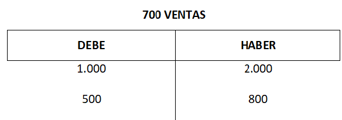

LIBRO MAYOR
El libro mayor contable es el libro en el que se registran cada una de las cuentas contables de una empresa. Es decir, se trata de un documento que incluye los movimientos de cada de las cuentas de una empresa por separado.
Tener el libro mayor no es obligatorio, aunque si es recomendable, ya que permite ver a simple vista los movimientos que se incluyen en cada una de las cuentas contables de la empresa, así como definir cuál es su saldo durante el ejercicio contable, lo que proporciona información a la empresa.
En consecuencia, la finalidad del libro mayor es conocer el saldo que va arrastrando cada cuenta por las operaciones registradas en todo momento, atendiendo a cada cuenta contable de forma específica.
Supongamos que una empresa ha pagado 1000€ a un proveedor y 500€ a otro, así como ha vendido sus productos o servicios a dos clientes. Al primer cliente, ha vendido por valor de 2000€ y al segundo cliente por valor de 800€.
Los balances del libro mayor en cuanto a DEBE y HABER quedarían de este modo.

Para poder incluir un movimiento en el libro mayor, en primer lugar se debe registrar el movimiento en el libro diario. Una vez realizado, se tiene que registrar la operación en el libro mayor, siempre teniendo en cuenta la página del libro mayor en la que se debe ubicar.
Al cumplimentar un libro mayor, se debe tener en cuenta que las hojas en las que se registran las operaciones no son aleatorias, sino que cada hoja del libro mayor incorpora los movimientos de cada una de las cuentas de la empresa.
De la misma forma, los movimientos deberán siempre aparecer en orden cronológico, es decir, por fecha en la que se ha generado.
El contenido del libro mayor debe establecerse por orden cronológico. Es decir, se debe registrar los movimientos teniendo en cuenta las fechas en las que se han producido las operaciones.
La información de cada una de las hojas del libro mayor deberá presentarse en cinco columnas, en las que debe aparecer el siguiente contenido:
- Fecha en la que se ha producido el movimiento.
- Concepto que identifica el movimiento
- DEBE, la columna que refleja aquellos movimientos de ingreso.
- HABER, la columna que refleja aquellos movimientos de gasto.
- Saldo, es decir, la diferencia entre el debe y el haber, por el que podemos establecer un resultado que defina la situación de la empresa.
Una vez realizadas las anotaciones se obtiene el resultado del saldo entre el debe y el haber, calculado a partir de la diferencia de ambos:
- En el caso que el debe sea mayor que el haber, el saldo será deudor.
- En el caso que el haber sea mayor que el debe, el saldo será acreedor.
- En el caso que la suma del debe y el haber sea igual a cero, el saldo será nulo.
LIBRO DIARIO
El libro diario y el libro mayor son dos de los libros de contabilidad que reflejan la misma información. A pesar que a priori puedan parecer lo mismo, el libro diario y el libro mayor no son lo mismo, ya que distribuyen la información de forma diferenciada y, por lo tanto, tienen finalidades distintas.
El libro diario es aquél en el que se registran todos los movimientos en las cuentas de la empresa, independientemente del asiento contable al que se asignen. Es decir, el libro diario es aquél en el que se encuentran todos los movimientos de la empresa.
La principal diferencia entre el libro diario y mayor es que en el libro diario se registran todos los movimientos de la empresa y en el libro mayor se definen los movimientos divididos por asientos contables. Por otro lado, el libro diario es obligatorio para toda empresa y el libro mayor no, aunque no por ello debemos dejar de completarlo, ya que a partir de éste, se obtiene mucha información acerca de la empresa.
ASIENTOS CONTABLES
Un asiento contable es una anotación en los libros contables de las operaciones o movimientos que se producen en la cuenta de una empresa. Para poder crear una entrada en el libro diario de contabilidad, tienes que crear dos asientos que se asignan al DEBE y al HABER. Es decir, por cada anotación que se produzca en el DEBE, se supone que habrá otra anotación en el HABER. A esto se le conoce como partida doble en contabilidad.
En el libro diario de contabilidad, se reflejan los movimientos realizados en una cuenta, diferenciados por la columna en la cual se ubique, en la columna izquierda será en la que se encuentre el DEBE y en la columna derecha, se ubicará el HABER.
Por un lado, en el DEBE se tiene que reflejar todo aquello que sean ingresos y débitos, es decir, todo aquello que sean cargos o abonos en la cuenta.
Por otro lado, los gastos o los créditos de la cuenta se tendrán que reflejar en el HABER.
Cuando se realiza una anotación al DEBE, se establece un movimiento que se denomina CARGO. En cambio, si la anotación se hace en el HABER, este movimiento se conoce como ABONO.